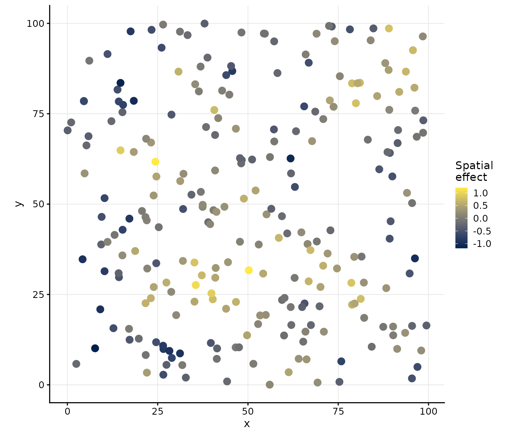
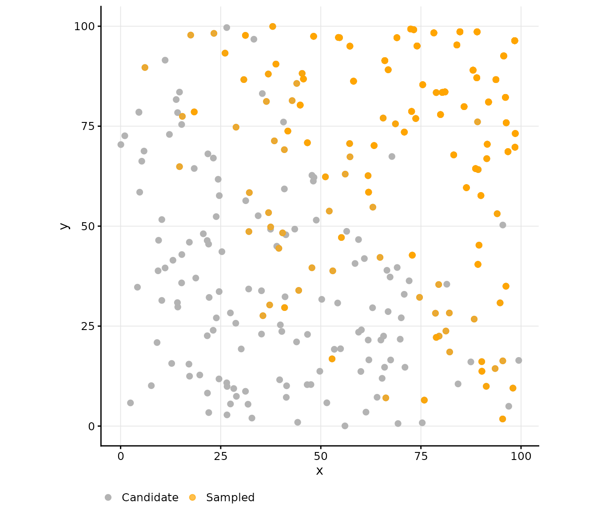
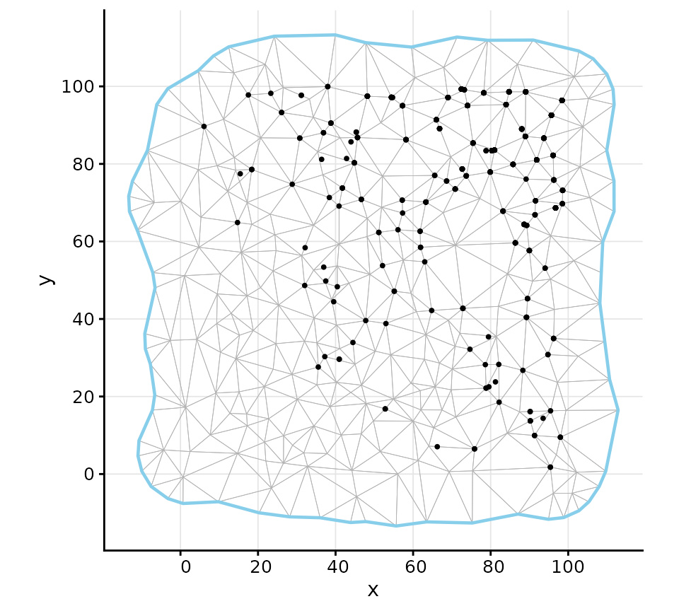
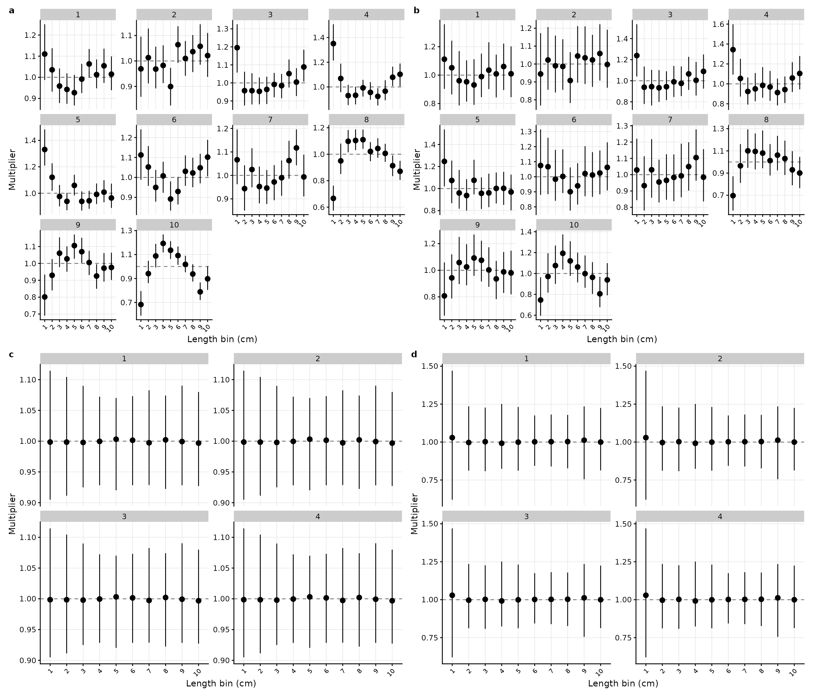
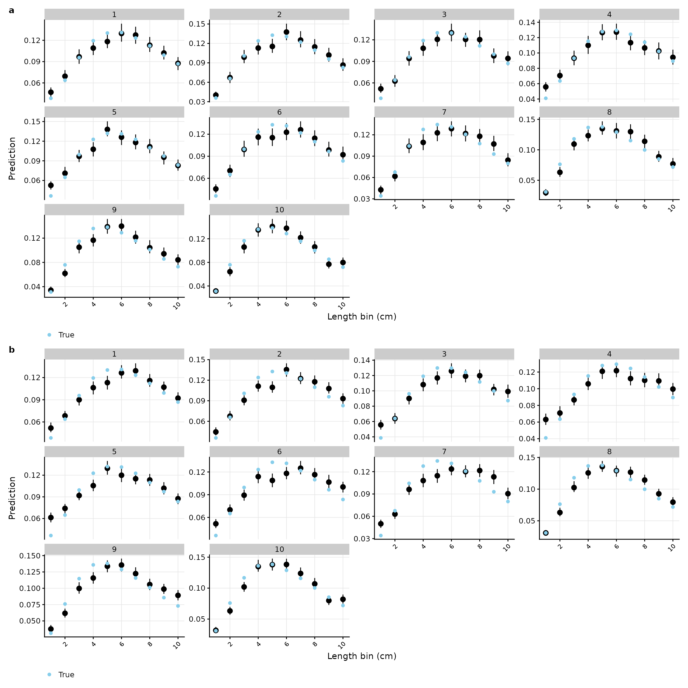
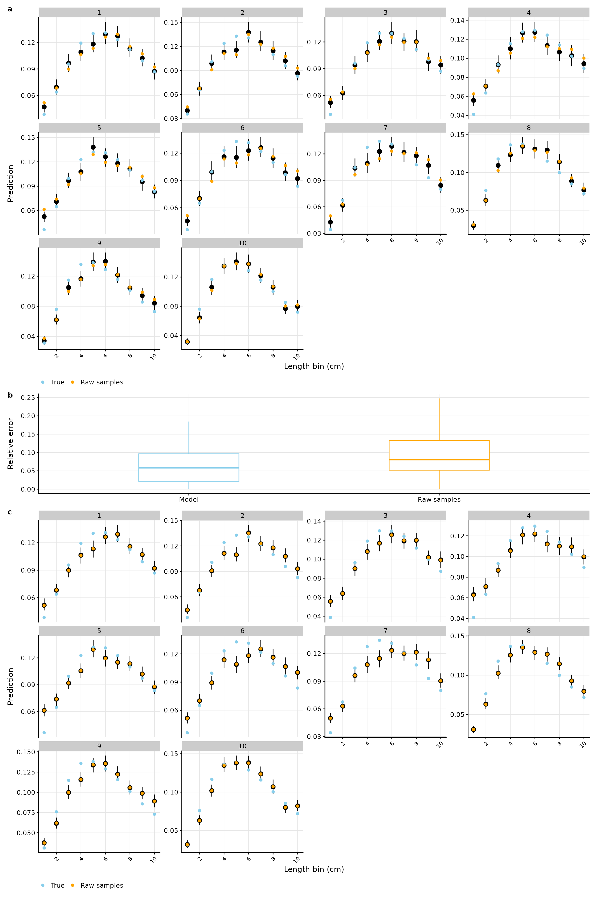
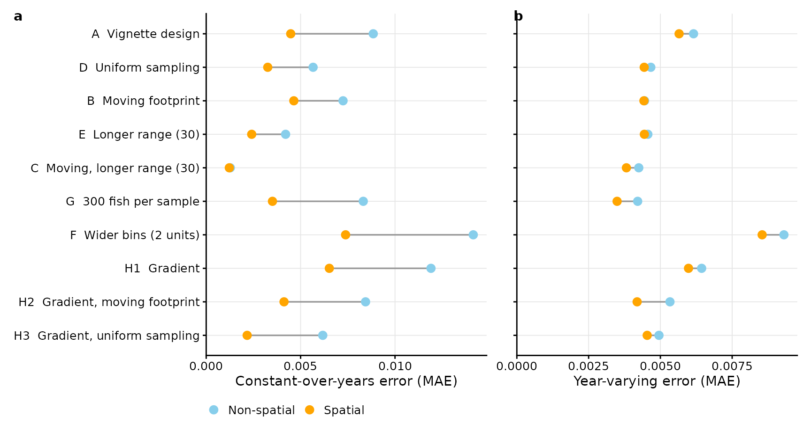
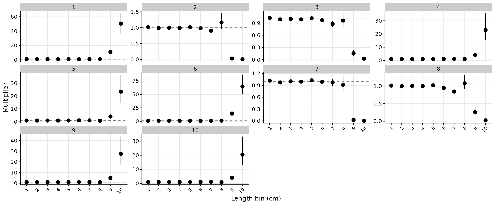
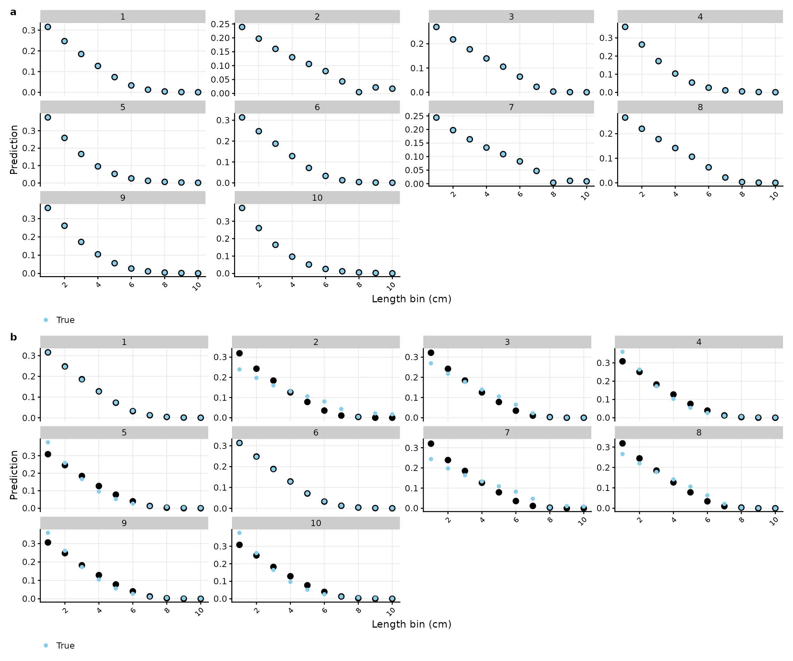

Correcting for spatially biased sampling in compositional data
Source:vignettes/spatial_bias_simulation.Rmd
spatial_bias_simulation.RmdFisheries catch composition data are often collected from non-representative sampling programmes — observers may cover only a subset of the fleet, certain areas or seasons may be over- or under-sampled, and spatial coverage can shift over time. Naively treating these samples as representative of the whole fishery can produce biased estimates of catch-at-age or catch-at-length compositions.
This vignette demonstrates how ComPoM can correct for
such biases by: fitting a Poisson-multinomial model with spatially
varying coefficients (via sdmTMB), then scaling the model
predictions to known total catches across the full fished area.
The simulation sets up a known truth — spatially varying selectivity, temporal trends, and seasonal effects — then samples it with strong spatial and seasonal bias. We compare a spatial model that accounts for the full domain against a non-spatial model that cannot, showing that the spatial model recovers the true compositions more accurately.
library(tidyverse)
library(ComPoM)
library(sdmTMB)
source("vignette_helpers.R")
# Helper functions
clo <- function(x) x / sum(x)
# Simulation parameters
n_bins <- 10
n_samps <- 50
n_locations <- 250
n_seasons <- 4
n_per_samps <- 100
n_years <- 10
M <- 0.2
surv <- exp(-(1:n_bins) * M)
popfreq <- clo(surv)
# Selectivity parameters
L50_base <- 6.5
L95 <- 0.75Simulate Spatial Domain
Create a spatial grid with coordinates and simulate spatially-varying selectivity.
Figure 1 shows the simulated spatial effect on L50.
set.seed(123)
# Create spatial locations (e.g., fishing locations)
locations <- data.frame(
loc_id = 1:n_locations,
x = runif(n_locations, 0, 100),
y = runif(n_locations, 0, 100)
)
# Simulate spatial random field for selectivity variation
# Using a simple distance-based correlation structure
spatial_field <- function(x, y, range = 30, sigma = 0.3) {
n <- length(x)
dist_mat <- as.matrix(dist(cbind(x, y)))
cov_mat <- sigma^2 * exp(-dist_mat / range)
MASS::mvrnorm(1, rep(0, n), cov_mat)
}
# Generate spatial effect on L50
locations$spatial_effect <- spatial_field(locations$x, locations$y, range = 10, sigma = 0.5)
# Visualize spatial field
ggplot(locations, aes(x = x, y = y, color = spatial_effect)) +
geom_point(size = 3) +
scale_color_viridis_c(option = "cividis", name = "Spatial\neffect") +
coord_equal()
Figure 1. Simulated spatial effect on the selectivity parameter L50 (log scale) at the candidate locations.
Simulate Temporal and Seasonal Effects
# Year effects (random walk)
year_effects <- cumsum(rnorm(n_years, 0, 0.1))
# Season effects
season_effects <- rnorm(n_seasons, 0, 0.2)
season_effects <- season_effects - mean(season_effects)
temporal_df <- expand_grid(
Year = factor(1:n_years),
Season = factor(1:n_seasons)
) |>
mutate(
year_effect = year_effects[as.integer(Year)],
season_effect = season_effects[as.integer(Season)]
)Generate True Catch Compositions
# Full factorial of all strata with spatial coordinates
true_catch_by_bin <- expand_grid(
loc_id = 1:n_locations,
Year = factor(1:n_years),
Season = factor(1:n_seasons),
bin = 1:n_bins
) |>
left_join(locations, by = "loc_id") |>
left_join(temporal_df, by = c("Year", "Season")) |>
mutate(
L50 = exp(log(L50_base) + spatial_effect + year_effect + season_effect),
catch = rgamma(n(), 100, 0.01),
tcatch = Selectivity(bin, L50, L95) * popfreq[bin] * catch
)
# Summarize true catch
true_catch_summary <- true_catch_by_bin |>
group_by(Year, bin) |>
summarise(tcatch = sum(tcatch), .groups = "drop")Simulate Non-Representative Sampling
Figure 2 shows the candidate and sampled locations.
# Sample locations with strong spatial bias (prefer high x AND high y corner)
sample_locations <- function(n_samps, locations) {
# Strong bias towards the northeast corner of the domain
probs <- exp(locations$x / 25 + locations$y / 25)
probs <- probs / sum(probs)
sample(locations$loc_id, n_samps, replace = TRUE, prob = probs)
}
# Season sampling probabilities that shift across years
# Early years oversample season 1, late years oversample season 4
season_probs_by_year <- function(year, n_years, n_seasons) {
# Linear shift: weight moves from season 1 to season 4 over time
alpha <- (year - 1) / (n_years - 1) # 0 for year 1, 1 for last year
weights <- numeric(n_seasons)
weights[1] <- 4 * (1 - alpha) + 0.5 * alpha
weights[n_seasons] <- 0.5 * (1 - alpha) + 4 * alpha
# Middle seasons stay low
if (n_seasons > 2) {
weights[2:(n_seasons - 1)] <- 0.5
}
weights / sum(weights)
}
# Generate samples - distribute across years
set.seed(456)
samples <- tibble(
samp_id = 1:(n_samps * n_years),
Year = factor(rep(1:n_years, each = n_samps))
) |>
mutate(
loc_id = sample_locations(n(), locations),
Season = factor(sapply(as.integer(Year), function(yr) {
sample(1:n_seasons, 1, prob = season_probs_by_year(yr, n_years, n_seasons))
}))
) |>
left_join(locations, by = "loc_id") |>
left_join(temporal_df, by = c("Year", "Season")) |>
mutate(
L50 = exp(log(L50_base) + spatial_effect + year_effect + season_effect)
)
# Generate composition samples from each sampling event
long_form_sims <- samples |>
group_by(samp_id) |>
nest() |>
mutate(
comp_samps = lapply(data, function(df) {
which(rmultinom(n_per_samps, 1,
Selectivity(1:n_bins, df$L50, L95) * popfreq) == 1,
arr.ind = TRUE)[, 1]
})
) |>
unnest(c(data, comp_samps)) |>
mutate(count = 1) |>
rename(bin = comp_samps)
# Visualize sampling locations
ggplot() +
geom_point(data = locations, aes(x = x, y = y, colour = "Candidate"), size = 2) +
geom_point(data = long_form_sims |> distinct(loc_id, x, y),
aes(x = x, y = y, colour = "Sampled"), alpha = 0.7, size = 2) +
scale_colour_manual(values = c(Candidate = "grey70", Sampled = "orange"), name = NULL) +
coord_equal() +
theme(legend.position = "bottom")
Figure 2. Candidate locations (grey) and locations that were sampled (orange).
Prepare Data and Create Mesh
# Prepare input data for ComPoM
input_data <- data_prep(
long_form_sims,
vars_for_grouping = c('loc_id', 'Year', 'Season', 'x', 'y'),
bin_lab = 'bin'
) |>
mutate(
x = as.numeric(as.character(x)),
y = as.numeric(as.character(y))
)
# Create mesh for sdmTMB — use ALL fishing locations for the domain,
# not just the biased sample, so the mesh covers the full fished area
all_locs_sf <- sf::st_as_sf(locations, coords = c("x", "y"))
bnd <- fmesher::fm_nonconvex_hull(all_locs_sf, convex = -0.1, format = 'sf')
msh <- fmesher::fm_mesh_2d(locations[, c("x", "y")], cutoff = 3, boundary = bnd)
mesh <- make_mesh(input_data, xy_cols = c("x", "y"), mesh = msh)
bnd_vect <- terra::vect(bnd)
pg <- terra::rast(bnd_vect)
pg$lyr.1 <- 1Figure 3 shows the mesh used for the spatial fields.
ggplot() +
geom_sf(data = fmesher::fm_as_sfc(msh), fill = NA, colour = "grey70", linewidth = 0.15) +
geom_sf(data = bnd, fill = NA, colour = "skyblue", linewidth = 0.8) +
geom_point(data = distinct(input_data, x, y), aes(x = x, y = y), size = 0.7) +
labs(x = "x", y = "y")
Figure 3. SPDE mesh (grey triangles), domain boundary (skyblue) and sampled locations (points).
Fit Spatiotemporal Model with sdmTMB
# Fit model with bin-specific spatially varying coefficients
mods_spatial <- fit_model(
re_form = 'Season',
ffx_form = 'Year',
data = input_data,
backend = 'TMB',
mesh = mesh,
time = "Year",
coords = c("x", "y"),
iter = 1000,
warmup = 500,
thin = 2
)
summary(mods_spatial$model)
#> Model fit by ML ['sdmTMB']
#> Formula: form
#> Mesh: mesh (isotropic covariance)
#> Time column: time
#> Data: svc_setup$data_expanded
#> Family: poisson(link = 'log')
#>
#> Random intercepts and/or slopes:
#>
#> Conditional model:
#> Groups Name Variance Std.Dev.
#> bin:Season (Intercept) 0.00 0.00
#>
#> Conditional model:
#> coef.est coef.se
#> bin1 -3.09 0.07
#> bin2 -2.69 0.07
#> bin3 -2.35 0.06
#> bin4 -2.23 0.06
#> bin5 -2.15 0.05
#> bin6 -2.05 0.05
#> bin7 -2.08 0.05
#> bin8 -2.20 0.05
#> bin9 -2.29 0.06
#> bin10 -2.46 0.06
#> bin1:factor(Year)2 -0.15 0.10
#> bin2:factor(Year)2 -0.02 0.08
#> bin3:factor(Year)2 0.02 0.07
#> bin4:factor(Year)2 0.03 0.06
#> bin5:factor(Year)2 -0.02 0.06
#> bin6:factor(Year)2 0.06 0.06
#> bin7:factor(Year)2 -0.02 0.06
#> bin8:factor(Year)2 0.02 0.06
#> bin9:factor(Year)2 0.00 0.07
#> bin10:factor(Year)2 -0.01 0.07
#> bin1:factor(Year)3 0.11 0.09
#> bin2:factor(Year)3 -0.10 0.08
#> bin3:factor(Year)3 -0.03 0.07
#> bin4:factor(Year)3 -0.01 0.06
#> bin5:factor(Year)3 0.02 0.06
#> bin6:factor(Year)3 0.00 0.06
#> bin7:factor(Year)3 -0.06 0.06
#> bin8:factor(Year)3 0.07 0.06
#> bin9:factor(Year)3 -0.05 0.07
#> bin10:factor(Year)3 0.08 0.07
#> bin1:factor(Year)4 0.18 0.09
#> bin2:factor(Year)4 0.01 0.08
#> bin3:factor(Year)4 -0.04 0.07
#> bin4:factor(Year)4 0.00 0.07
#> bin5:factor(Year)4 0.07 0.06
#> bin6:factor(Year)4 -0.02 0.06
#> bin7:factor(Year)4 -0.12 0.06
#> bin8:factor(Year)4 -0.06 0.06
#> bin9:factor(Year)4 0.00 0.06
#> bin10:factor(Year)4 0.08 0.07
#> bin1:factor(Year)5 0.12 0.09
#> bin2:factor(Year)5 0.03 0.08
#> bin3:factor(Year)5 0.00 0.07
#> bin4:factor(Year)5 -0.02 0.07
#> bin5:factor(Year)5 0.16 0.06
#> bin6:factor(Year)5 -0.03 0.06
#> bin7:factor(Year)5 -0.08 0.06
#> bin8:factor(Year)5 -0.01 0.06
#> bin9:factor(Year)5 -0.06 0.07
#> bin10:factor(Year)5 -0.05 0.07
#> bin1:factor(Year)6 -0.03 0.09
#> bin2:factor(Year)6 0.02 0.08
#> bin3:factor(Year)6 0.02 0.07
#> bin4:factor(Year)6 0.06 0.06
#> bin5:factor(Year)6 -0.02 0.06
#> bin6:factor(Year)6 -0.05 0.06
#> bin7:factor(Year)6 -0.02 0.06
#> bin8:factor(Year)6 0.01 0.06
#> bin9:factor(Year)6 -0.03 0.07
#> bin10:factor(Year)6 0.05 0.07
#> bin1:factor(Year)7 -0.08 0.09
#> bin2:factor(Year)7 -0.11 0.08
#> bin3:factor(Year)7 0.07 0.07
#> bin4:factor(Year)7 0.00 0.07
#> bin5:factor(Year)7 0.04 0.06
#> bin6:factor(Year)7 -0.01 0.06
#> bin7:factor(Year)7 -0.04 0.06
#> bin8:factor(Year)7 0.04 0.06
#> bin9:factor(Year)7 0.05 0.07
#> bin10:factor(Year)7 -0.03 0.07
#> bin1:factor(Year)8 -0.46 0.11
#> bin2:factor(Year)8 -0.08 0.08
#> bin3:factor(Year)8 0.13 0.07
#> bin4:factor(Year)8 0.13 0.06
#> bin5:factor(Year)8 0.14 0.06
#> bin6:factor(Year)8 0.01 0.06
#> bin7:factor(Year)8 0.02 0.06
#> bin8:factor(Year)8 0.01 0.06
#> bin9:factor(Year)8 -0.14 0.07
#> bin10:factor(Year)8 -0.13 0.07
#> bin1:factor(Year)9 -0.31 0.10
#> bin2:factor(Year)9 -0.11 0.08
#> bin3:factor(Year)9 0.09 0.07
#> bin4:factor(Year)9 0.07 0.06
#> bin5:factor(Year)9 0.16 0.06
#> bin6:factor(Year)9 0.07 0.06
#> bin7:factor(Year)9 -0.04 0.06
#> bin8:factor(Year)9 -0.08 0.06
#> bin9:factor(Year)9 -0.08 0.07
#> bin10:factor(Year)9 -0.04 0.07
#> bin1:factor(Year)10 -0.40 0.10
#> bin2:factor(Year)10 -0.07 0.08
#> bin3:factor(Year)10 0.09 0.07
#> bin4:factor(Year)10 0.21 0.06
#> bin5:factor(Year)10 0.19 0.06
#> bin6:factor(Year)10 0.06 0.06
#> bin7:factor(Year)10 -0.05 0.06
#> bin8:factor(Year)10 -0.06 0.06
#> bin9:factor(Year)10 -0.28 0.07
#> bin10:factor(Year)10 -0.09 0.07
#>
#> Matérn range: 10.47
#> Spatially varying coefficient SD (bin1): 0.18
#> Spatially varying coefficient SD (bin2): 0.18
#> Spatially varying coefficient SD (bin3): 0.18
#> Spatially varying coefficient SD (bin4): 0.18
#> Spatially varying coefficient SD (bin5): 0.18
#> Spatially varying coefficient SD (bin6): 0.18
#> Spatially varying coefficient SD (bin7): 0.18
#> Spatially varying coefficient SD (bin8): 0.18
#> Spatially varying coefficient SD (bin9): 0.18
#> Spatially varying coefficient SD (bin10): 0.18
#> Spatially varying coefficient SD (`factor(Year)1:bin1`): 0.03
#> Spatially varying coefficient SD (`factor(Year)2:bin1`): 0.03
#> Spatially varying coefficient SD (`factor(Year)3:bin1`): 0.03
#> Spatially varying coefficient SD (`factor(Year)4:bin1`): 0.03
#> Spatially varying coefficient SD (`factor(Year)5:bin1`): 0.03
#> Spatially varying coefficient SD (`factor(Year)6:bin1`): 0.03
#> Spatially varying coefficient SD (`factor(Year)7:bin1`): 0.03
#> Spatially varying coefficient SD (`factor(Year)8:bin1`): 0.03
#> Spatially varying coefficient SD (`factor(Year)9:bin1`): 0.03
#> Spatially varying coefficient SD (`factor(Year)10:bin1`): 0.03
#> Spatially varying coefficient SD (`factor(Year)1:bin2`): 0.03
#> Spatially varying coefficient SD (`factor(Year)2:bin2`): 0.03
#> Spatially varying coefficient SD (`factor(Year)3:bin2`): 0.03
#> Spatially varying coefficient SD (`factor(Year)4:bin2`): 0.03
#> Spatially varying coefficient SD (`factor(Year)5:bin2`): 0.03
#> Spatially varying coefficient SD (`factor(Year)6:bin2`): 0.03
#> Spatially varying coefficient SD (`factor(Year)7:bin2`): 0.03
#> Spatially varying coefficient SD (`factor(Year)8:bin2`): 0.03
#> Spatially varying coefficient SD (`factor(Year)9:bin2`): 0.03
#> Spatially varying coefficient SD (`factor(Year)10:bin2`): 0.03
#> Spatially varying coefficient SD (`factor(Year)1:bin3`): 0.03
#> Spatially varying coefficient SD (`factor(Year)2:bin3`): 0.03
#> Spatially varying coefficient SD (`factor(Year)3:bin3`): 0.03
#> Spatially varying coefficient SD (`factor(Year)4:bin3`): 0.03
#> Spatially varying coefficient SD (`factor(Year)5:bin3`): 0.03
#> Spatially varying coefficient SD (`factor(Year)6:bin3`): 0.03
#> Spatially varying coefficient SD (`factor(Year)7:bin3`): 0.03
#> Spatially varying coefficient SD (`factor(Year)8:bin3`): 0.03
#> Spatially varying coefficient SD (`factor(Year)9:bin3`): 0.03
#> Spatially varying coefficient SD (`factor(Year)10:bin3`): 0.03
#> Spatially varying coefficient SD (`factor(Year)1:bin4`): 0.03
#> Spatially varying coefficient SD (`factor(Year)2:bin4`): 0.03
#> Spatially varying coefficient SD (`factor(Year)3:bin4`): 0.03
#> Spatially varying coefficient SD (`factor(Year)4:bin4`): 0.03
#> Spatially varying coefficient SD (`factor(Year)5:bin4`): 0.03
#> Spatially varying coefficient SD (`factor(Year)6:bin4`): 0.03
#> Spatially varying coefficient SD (`factor(Year)7:bin4`): 0.03
#> Spatially varying coefficient SD (`factor(Year)8:bin4`): 0.03
#> Spatially varying coefficient SD (`factor(Year)9:bin4`): 0.03
#> Spatially varying coefficient SD (`factor(Year)10:bin4`): 0.03
#> Spatially varying coefficient SD (`factor(Year)1:bin5`): 0.03
#> Spatially varying coefficient SD (`factor(Year)2:bin5`): 0.03
#> Spatially varying coefficient SD (`factor(Year)3:bin5`): 0.03
#> Spatially varying coefficient SD (`factor(Year)4:bin5`): 0.03
#> Spatially varying coefficient SD (`factor(Year)5:bin5`): 0.03
#> Spatially varying coefficient SD (`factor(Year)6:bin5`): 0.03
#> Spatially varying coefficient SD (`factor(Year)7:bin5`): 0.03
#> Spatially varying coefficient SD (`factor(Year)8:bin5`): 0.03
#> Spatially varying coefficient SD (`factor(Year)9:bin5`): 0.03
#> Spatially varying coefficient SD (`factor(Year)10:bin5`): 0.03
#> Spatially varying coefficient SD (`factor(Year)1:bin6`): 0.03
#> Spatially varying coefficient SD (`factor(Year)2:bin6`): 0.03
#> Spatially varying coefficient SD (`factor(Year)3:bin6`): 0.03
#> Spatially varying coefficient SD (`factor(Year)4:bin6`): 0.03
#> Spatially varying coefficient SD (`factor(Year)5:bin6`): 0.03
#> Spatially varying coefficient SD (`factor(Year)6:bin6`): 0.03
#> Spatially varying coefficient SD (`factor(Year)7:bin6`): 0.03
#> Spatially varying coefficient SD (`factor(Year)8:bin6`): 0.03
#> Spatially varying coefficient SD (`factor(Year)9:bin6`): 0.03
#> Spatially varying coefficient SD (`factor(Year)10:bin6`): 0.03
#> Spatially varying coefficient SD (`factor(Year)1:bin7`): 0.03
#> Spatially varying coefficient SD (`factor(Year)2:bin7`): 0.03
#> Spatially varying coefficient SD (`factor(Year)3:bin7`): 0.03
#> Spatially varying coefficient SD (`factor(Year)4:bin7`): 0.03
#> Spatially varying coefficient SD (`factor(Year)5:bin7`): 0.03
#> Spatially varying coefficient SD (`factor(Year)6:bin7`): 0.03
#> Spatially varying coefficient SD (`factor(Year)7:bin7`): 0.03
#> Spatially varying coefficient SD (`factor(Year)8:bin7`): 0.03
#> Spatially varying coefficient SD (`factor(Year)9:bin7`): 0.03
#> Spatially varying coefficient SD (`factor(Year)10:bin7`): 0.03
#> Spatially varying coefficient SD (`factor(Year)1:bin8`): 0.03
#> Spatially varying coefficient SD (`factor(Year)2:bin8`): 0.03
#> Spatially varying coefficient SD (`factor(Year)3:bin8`): 0.03
#> Spatially varying coefficient SD (`factor(Year)4:bin8`): 0.03
#> Spatially varying coefficient SD (`factor(Year)5:bin8`): 0.03
#> Spatially varying coefficient SD (`factor(Year)6:bin8`): 0.03
#> Spatially varying coefficient SD (`factor(Year)7:bin8`): 0.03
#> Spatially varying coefficient SD (`factor(Year)8:bin8`): 0.03
#> Spatially varying coefficient SD (`factor(Year)9:bin8`): 0.03
#> Spatially varying coefficient SD (`factor(Year)10:bin8`): 0.03
#> Spatially varying coefficient SD (`factor(Year)1:bin9`): 0.03
#> Spatially varying coefficient SD (`factor(Year)2:bin9`): 0.03
#> Spatially varying coefficient SD (`factor(Year)3:bin9`): 0.03
#> Spatially varying coefficient SD (`factor(Year)4:bin9`): 0.03
#> Spatially varying coefficient SD (`factor(Year)5:bin9`): 0.03
#> Spatially varying coefficient SD (`factor(Year)6:bin9`): 0.03
#> Spatially varying coefficient SD (`factor(Year)7:bin9`): 0.03
#> Spatially varying coefficient SD (`factor(Year)8:bin9`): 0.03
#> Spatially varying coefficient SD (`factor(Year)9:bin9`): 0.03
#> Spatially varying coefficient SD (`factor(Year)10:bin9`): 0.03
#> Spatially varying coefficient SD (`factor(Year)1:bin10`): 0.03
#> Spatially varying coefficient SD (`factor(Year)2:bin10`): 0.03
#> Spatially varying coefficient SD (`factor(Year)3:bin10`): 0.03
#> Spatially varying coefficient SD (`factor(Year)4:bin10`): 0.03
#> Spatially varying coefficient SD (`factor(Year)5:bin10`): 0.03
#> Spatially varying coefficient SD (`factor(Year)6:bin10`): 0.03
#> Spatially varying coefficient SD (`factor(Year)7:bin10`): 0.03
#> Spatially varying coefficient SD (`factor(Year)8:bin10`): 0.03
#> Spatially varying coefficient SD (`factor(Year)9:bin10`): 0.03
#> Spatially varying coefficient SD (`factor(Year)10:bin10`): 0.03
#> ML criterion at convergence: 11372.529
#>
#> See ?tidy.sdmTMB to extract these values as a data frame.
#>
#> **Possible issues detected! Check output of sanity().**Fit Non-Spatial Model for Comparison
mods_nonspatial <- fit_model(
re_form = 'Season',
ffx_form = 'Year',
data = input_data,
backend = 'TMB',
iter = 1000,
warmup = 500,
thin = 2
)
summary(mods_nonspatial$model)
#> Model fit by ML ['sdmTMB']
#> Formula: form
#> Mesh: (isotropic covariance)
#> Data: data
#> Family: poisson(link = 'log')
#>
#> Random intercepts and/or slopes:
#>
#> Conditional model:
#> Groups Name Variance Std.Dev.
#> bin:Season (Intercept) 0.00 0.00
#>
#> Conditional model:
#> coef.est coef.se
#> bin1 -2.96 0.06
#> bin2 -2.68 0.05
#> bin3 -2.41 0.05
#> bin4 -2.24 0.04
#> bin5 -2.18 0.04
#> bin6 -2.07 0.04
#> bin7 -2.04 0.04
#> bin8 -2.16 0.04
#> bin9 -2.23 0.04
#> bin10 -2.38 0.05
#> bin1:factor(Year)2 -0.15 0.09
#> bin2:factor(Year)2 -0.01 0.08
#> bin3:factor(Year)2 0.01 0.07
#> bin4:factor(Year)2 0.05 0.06
#> bin5:factor(Year)2 -0.03 0.06
#> bin6:factor(Year)2 0.07 0.06
#> bin7:factor(Year)2 -0.05 0.06
#> bin8:factor(Year)2 0.02 0.06
#> bin9:factor(Year)2 0.00 0.06
#> bin10:factor(Year)2 0.01 0.07
#> bin1:factor(Year)3 0.07 0.09
#> bin2:factor(Year)3 -0.07 0.08
#> bin3:factor(Year)3 0.00 0.07
#> bin4:factor(Year)3 0.01 0.06
#> bin5:factor(Year)3 0.03 0.06
#> bin6:factor(Year)3 -0.01 0.06
#> bin7:factor(Year)3 -0.08 0.06
#> bin8:factor(Year)3 0.04 0.06
#> bin9:factor(Year)3 -0.05 0.06
#> bin10:factor(Year)3 0.07 0.06
#> bin1:factor(Year)4 0.19 0.08
#> bin2:factor(Year)4 0.03 0.08
#> bin3:factor(Year)4 -0.03 0.07
#> bin4:factor(Year)4 -0.01 0.06
#> bin5:factor(Year)4 0.06 0.06
#> bin6:factor(Year)4 -0.03 0.06
#> bin7:factor(Year)4 -0.14 0.06
#> bin8:factor(Year)4 -0.05 0.06
#> bin9:factor(Year)4 0.02 0.06
#> bin10:factor(Year)4 0.08 0.06
#> bin1:factor(Year)5 0.17 0.08
#> bin2:factor(Year)5 0.08 0.08
#> bin3:factor(Year)5 0.02 0.07
#> bin4:factor(Year)5 -0.01 0.06
#> bin5:factor(Year)5 0.13 0.06
#> bin6:factor(Year)5 -0.06 0.06
#> bin7:factor(Year)5 -0.12 0.06
#> bin8:factor(Year)5 -0.02 0.06
#> bin9:factor(Year)5 -0.05 0.06
#> bin10:factor(Year)5 -0.05 0.07
#> bin1:factor(Year)6 0.00 0.09
#> bin2:factor(Year)6 0.02 0.08
#> bin3:factor(Year)6 -0.01 0.07
#> bin4:factor(Year)6 0.07 0.06
#> bin5:factor(Year)6 -0.04 0.06
#> bin6:factor(Year)6 -0.07 0.06
#> bin7:factor(Year)6 -0.03 0.06
#> bin8:factor(Year)6 0.01 0.06
#> bin9:factor(Year)6 -0.01 0.06
#> bin10:factor(Year)6 0.09 0.06
#> bin1:factor(Year)7 -0.04 0.09
#> bin2:factor(Year)7 -0.08 0.08
#> bin3:factor(Year)7 0.07 0.07
#> bin4:factor(Year)7 0.01 0.06
#> bin5:factor(Year)7 0.01 0.06
#> bin6:factor(Year)7 -0.02 0.06
#> bin7:factor(Year)7 -0.07 0.06
#> bin8:factor(Year)7 0.05 0.06
#> bin9:factor(Year)7 0.06 0.06
#> bin10:factor(Year)7 -0.02 0.07
#> bin1:factor(Year)8 -0.52 0.10
#> bin2:factor(Year)8 -0.08 0.08
#> bin3:factor(Year)8 0.13 0.06
#> bin4:factor(Year)8 0.17 0.06
#> bin5:factor(Year)8 0.18 0.06
#> bin6:factor(Year)8 0.02 0.06
#> bin7:factor(Year)8 -0.02 0.06
#> bin8:factor(Year)8 -0.01 0.06
#> bin9:factor(Year)8 -0.14 0.06
#> bin10:factor(Year)8 -0.15 0.07
#> bin1:factor(Year)9 -0.32 0.10
#> bin2:factor(Year)9 -0.10 0.08
#> bin3:factor(Year)9 0.11 0.07
#> bin4:factor(Year)9 0.09 0.06
#> bin5:factor(Year)9 0.17 0.06
#> bin6:factor(Year)9 0.07 0.06
#> bin7:factor(Year)9 -0.06 0.06
#> bin8:factor(Year)9 -0.09 0.06
#> bin9:factor(Year)9 -0.08 0.06
#> bin10:factor(Year)9 -0.04 0.07
#> bin1:factor(Year)10 -0.49 0.10
#> bin2:factor(Year)10 -0.09 0.08
#> bin3:factor(Year)10 0.13 0.06
#> bin4:factor(Year)10 0.24 0.06
#> bin5:factor(Year)10 0.20 0.06
#> bin6:factor(Year)10 0.09 0.06
#> bin7:factor(Year)10 -0.05 0.06
#> bin8:factor(Year)10 -0.08 0.06
#> bin9:factor(Year)10 -0.29 0.07
#> bin10:factor(Year)10 -0.12 0.07
#>
#> ML criterion at convergence: 11691.592
#>
#> See ?tidy.sdmTMB to extract these values as a data frame.
#>
#> **Possible issues detected! Check output of sanity().**Effects Plots
Figure 4 shows the year and season effects from the non-spatial and spatial models.
(Fx_plot(mods_nonspatial, grp = 'Year', grid = NULL) |
Fx_plot(mods_spatial, grp = 'Year', grid = NULL)) /
(Fx_plot(mods_nonspatial, grp = 'Season', grid = NULL) |
Fx_plot(mods_spatial, grp = 'Season', grid = NULL)) +
plot_annotation(tag_levels = "a")
Figure 4. Year effects (a, b) and season effects (c, d) on the composition, as multipliers relative to the geometric mean across bins, from the non-spatial model (a, c) and the spatial model (b, d). Points are medians and bars 95% intervals.
Scale Compositions to Catch
# Prepare scaling data for spatial model
IDs <- terra::extract(pg, true_catch_by_bin[, c('x', 'y')], ID = TRUE, xy = TRUE)
true_catch_by_bin[, colnames(IDs)] <- IDs
scale_df_spatial <- true_catch_by_bin |>
group_by(Season, Year, x, y) |>
summarise(catch = sum(tcatch), .groups = "drop")
# Prepare scaling data for non-spatial model
scale_df_nonspatial <- true_catch_by_bin |>
semi_join(
input_data |> ungroup() |> distinct(Year, Season),
by = c("Year", "Season")
) |>
group_by(Year, Season) |>
summarise(catch = sum(tcatch), .groups = "drop")
# Scale compositions
scaled_comp_spatial <- scale_comps(
scale_df_spatial,
predvar = 'catch',
fit = mods_spatial,
grps = c('Season', 'Year')
)
scaled_comp_nonspatial <- scale_comps(
scale_df_nonspatial,
predvar = 'catch',
fit = mods_nonspatial,
grps = c('Year', 'Season')
)Compare Scaled Compositions to Truth
Figure 5 shows the scaled annual compositions of both models against the true composition.
# True compositions by year
true_comp_year <- true_catch_by_bin |>
group_by(Year, bin) |>
summarise(tcatch = sum(tcatch), .groups = "drop")
# Spatial model (aggregate across seasons)
scaled_comp_spatial_yr <- scaled_comp_spatial |>
group_by(Year, bin, .draw) |>
summarise(tot_by_bin = sum(tot_by_bin), .groups = "drop")
p_truth_spatial <- scaled_comp_plot(
scaled_comp = scaled_comp_spatial_yr,
grps = 'Year',
scaled = TRUE,
scales = "free_y",
comp_are = true_comp_year,
cvar = 'tcatch',
comp_label = "True"
)
# Non-spatial model (aggregate across seasons)
scaled_comp_nonspatial_yr <- scaled_comp_nonspatial |>
group_by(Year, bin, .draw) |>
summarise(tot_by_bin = sum(tot_by_bin), .groups = "drop")
p_truth_nonspatial <- scaled_comp_plot(
scaled_comp = scaled_comp_nonspatial_yr,
grps = 'Year',
scaled = TRUE,
scales = "free_y",
comp_are = true_comp_year,
cvar = 'tcatch',
comp_label = "True"
)
p_truth_spatial / p_truth_nonspatial + plot_annotation(tag_levels = "a")
Figure 5. Annual compositions of the catch from the spatial model (a) and the non-spatial model (b). Black points and bars are medians and 95% intervals, and skyblue points the true composition.
Evaluate Model Performance
Figure 6 shows both models compared with the true and raw sample compositions.
# Raw (biased) samples
raw_comp <- input_data |>
group_by(Year, bin) |>
summarise(tcatch = sum(tot_by_bin), .groups = "drop")
p_eval_spatial <- scaled_comp_plot(
scaled_comp = scaled_comp_spatial_yr,
grps = 'Year',
scaled = TRUE,
scales = "free_y",
comp_are = true_comp_year,
comp_are2 = raw_comp,
cvar = 'tcatch',
comp_label = "True",
comp2_label = "Raw samples"
)
p_eval_error <- scaled_comp_comp(
scaled_comp = scaled_comp_spatial_yr,
grps = 'Year',
scaled = TRUE,
comp_are = true_comp_year,
comp_are2 = raw_comp,
cvar = 'tcatch'
)
p_eval_nonspatial <- scaled_comp_plot(
scaled_comp = scaled_comp_nonspatial_yr,
grps = 'Year',
scaled = TRUE,
scales = "free_y",
comp_are = true_comp_year,
comp_are2 = raw_comp,
cvar = 'tcatch',
comp_label = "True",
comp2_label = "Raw samples"
)
p_eval_spatial / p_eval_error / p_eval_nonspatial +
plot_layout(heights = c(1, 0.3, 1)) + plot_annotation(tag_levels = "a")
Figure 6. Annual compositions from the spatial model (a), relative error of the spatial model and of the raw samples against the true composition (b), and annual compositions from the non-spatial model (c). The true composition is skyblue and the raw sample composition orange. Black points and bars are medians and 95% intervals.
Model Diagnostics
tidy(mods_spatial$model, "ran_pars")
#> # A tibble: 4 × 6
#> group_name term estimate std.error conf.low conf.high
#> <chr> <chr> <dbl> <dbl> <dbl> <dbl>
#> 1 NA range 10.5 1.35 8.13 13.5
#> 2 NA sigma_Z 0.183 0.00964 0.165 0.203
#> 3 NA sigma_Z 0.0309 0.0279 0.00526 0.181
#> 4 bin:Season sd__(Intercept) 0.0000279 NA 0 InfThe spatial model can better account for the non-representative sampling by modeling the underlying spatial structure in the data.
Scenario Comparison
The spatial model reduced the error of the annual compositions
relative to the non-spatial model in the simulation above, and a part of
the error remained. This section compares the two models in ten
scenarios to separate the error that the spatial model removed from the
error that it did not. The scenario code is in
scenario_helpers.R and run_scenarios.R, and
the results are stored in scenario_results.csv.
Scenario Design
Each scenario used the simulation code above with one or more changes (Table 1). The changes were in the sampling footprint (fixed in the north-east corner, moving from the north-east to the south-west over the years, or uniform with no seasonal shift), the range of the simulated spatial field, a west-to-east gradient in log(L50), the number of fish per sample, and the width of the length bins. All scenarios had 250 locations, 10 years, four seasons and 50 samples per year. Each scenario was simulated once with the same seeds. Absolute errors are therefore comparable within a scenario, and between scenarios they also reflect the differing realised fields.
Each scenario was fitted with the non-spatial model (year as fixed
effect, season as nuisance random effect) and with a spatial model that
had bin-specific spatial fields and no spatio-temporal fields
(fit_model(spatiotemporal = FALSE)), because the simulated
field is constant over time. Scenario A also included the model with
spatio-temporal fields from fit_model(). Compositions were
scaled to the true catch of all 250 locations by catch weighting, as
above, with 100 simulation draws.
The error was the mean absolute error (MAE) of the annual proportions, averaged over years and bins, relative to the true catch composition of the full fishery. The error was split into a component that was constant across years (the mean error of each bin over years) and a year-varying component (the remainder). A constant error shifts all years equally and does not change trends. The year-varying component includes sampling variation. The two components do not sum to the MAE, because each is a mean of absolute values.
| Scenario | Description | Footprint | Field range | Gradient | Fish per sample | Bin width | Locations sampled | Field, year 1 | Field, year 10 | Field, domain |
|---|---|---|---|---|---|---|---|---|---|---|
| A | Vignette design | corner | 10 | 0.0 | 100 | 1 | 116 | 0.09 | 0.02 | -0.01 |
| D | Uniform sampling | uniform | 10 | 0.0 | 100 | 1 | 207 | 0.05 | 0.05 | -0.01 |
| B | Moving footprint | moving | 10 | 0.0 | 100 | 1 | 198 | 0.07 | 0.00 | -0.01 |
| E | Longer range (30) | corner | 30 | 0.0 | 100 | 1 | 116 | 0.09 | 0.14 | 0.12 |
| C | Moving, longer range (30) | moving | 30 | 0.0 | 100 | 1 | 198 | 0.13 | 0.04 | 0.12 |
| G | 300 fish per sample | corner | 10 | 0.0 | 300 | 1 | 116 | 0.09 | 0.02 | -0.01 |
| F | Wider bins (2 units) | corner | 10 | 0.0 | 100 | 2 | 116 | 0.09 | 0.02 | -0.01 |
| H1 | Gradient | corner | 10 | 0.4 | 100 | 1 | 116 | 0.32 | 0.20 | 0.00 |
| H2 | Gradient, moving footprint | moving | 10 | 0.4 | 100 | 1 | 198 | 0.26 | -0.14 | 0.00 |
| H3 | Gradient, uniform sampling | uniform | 10 | 0.4 | 100 | 1 | 207 | 0.03 | 0.07 | 0.00 |
Scenario Results
| Scenario | Description | Bins | Raw | Non-spatial | Spatial | Reduction |
|---|---|---|---|---|---|---|
| A | Vignette design | 10 | 0.0105 | 0.0105 | 0.0070 | 34% |
| D | Uniform sampling | 10 | 0.0072 | 0.0072 | 0.0054 | 25% |
| B | Moving footprint | 10 | 0.0080 | 0.0081 | 0.0063 | 22% |
| E | Longer range (30) | 10 | 0.0060 | 0.0061 | 0.0050 | 18% |
| C | Moving, longer range (30) | 10 | 0.0045 | 0.0045 | 0.0041 | 8% |
| G | 300 fish per sample | 10 | 0.0090 | 0.0092 | 0.0048 | 47% |
| F | Wider bins (2 units) | 6 | 0.0160 | 0.0160 | 0.0109 | 32% |
| H1 | Gradient | 10 | 0.0136 | 0.0137 | 0.0082 | 40% |
| H2 | Gradient, moving footprint | 10 | 0.0093 | 0.0093 | 0.0059 | 36% |
| H3 | Gradient, uniform sampling | 10 | 0.0078 | 0.0079 | 0.0051 | 35% |
The non-spatial model reproduced the raw sample compositions (Table 2). Its MAE differed from the MAE of the raw samples by at most 0.0002 in every scenario, because the year-by-bin fixed effects estimated the annual composition of the samples.
The spatial model had a lower MAE than the non-spatial model in every scenario, by 8% (scenario C) to 47% (scenario G). The constant component was lower by 4% to 65% (Figure 7a), and the reduction was larger than that of the year-varying component in all scenarios except C. The year-varying component was lower by 0.5% to 21.5% (Figure 7b). It was 0.0042 to 0.0064 for the non-spatial model and 0.0035 to 0.0060 for the spatial model in the scenarios with 10 bins.
Figure 7 shows the scenario comparison.

Figure 7. Constant-over-years error (a) and year-varying error (b) of the annual compositions for the non-spatial model (skyblue) and the spatial-only model (orange) in each scenario. Scenario F had 6 bins and is not comparable in magnitude with the others.
stratum <- true_catch_by_bin |>
group_by(loc_id, Year, Season) |>
mutate(p = tcatch / sum(tcatch), catch_total = sum(tcatch)) |>
ungroup()
annual_prop <- function(weight) {
stratum |>
mutate(v = p * weight) |>
group_by(Year, bin) |>
summarise(v = sum(v), .groups = "drop") |>
group_by(Year) |>
mutate(v = v / sum(v)) |>
ungroup()
}
weighting_mae <- mean(abs(annual_prop(stratum$catch_total)$v - annual_prop(1)$v))
size_cor <- stratum |>
group_by(loc_id, Year, Season) |>
summarise(mean_bin = sum(bin * p), catch_total = first(catch_total), .groups = "drop") |>
summarise(r = cor(mean_bin, catch_total)) |>
pull(r)Uniform sampling (scenarios D and H3) left a constant error of 0.0057 and 0.0062 in the non-spatial model. This was lower than with the footprint in A (0.0088) and H1 (0.0119) and was not zero, so a part of the constant error did not depend on the sampling footprint. A likely contributor was catch weighting. The annual composition with equal weight for every stratum differs from the catch-weighted composition even without sampling and without a model. In the simulated world of scenario A, the two compositions differed by an MAE of 0.0060 (chunk above), and the stratum catch was correlated with the mean size of the stratum (correlation -0.594), because a stratum with larger fish had a lower selected abundance. This was computed for the world of scenario A only.
A sample average weights strata by the number of samples and not by
catch. The non-spatial model predicts one composition per year and
season, so the correlation between catch and size across the strata of a
year and season is not represented. The spatial model predicted each
stratum separately and weighted the predictions by catch in
scale_comps(). It lowered the constant error in D to 0.0033
and in H3 to 0.0022. The contribution of the weighting was not tested
separately in D and H3.
The moving footprint changed the mean simulated field at the sampled locations from 0.257 in the first year to -0.141 in the last year with the gradient (H2), against a domain mean of -0.003. The fixed footprint with the gradient (H1) sampled a field of 0.322 in the first year and 0.200 in the last year. The raw MAE was lower with the moving footprint than with the fixed footprint, 0.0080 against 0.0105 without the gradient (B and A) and 0.0093 against 0.0136 with it (H2 and H1). The moving footprint sampled 198 locations instead of 116. The year-varying component of the non-spatial model was lower with the moving footprint (0.0044 in B against 0.0062 in A, and 0.0053 in H2 against 0.0064 in H1). The reduction by the spatial model was 22% in B against 34% in A, and 36% in H2 against 40% in H1.
With 300 fish per sample (G), the MAE of the non-spatial model was 0.0092 against 0.0105 with 100 fish (A), and its constant component was 0.0083 against 0.0088 in A. The MAE of the spatial model fell from 0.0070 to 0.0048, a reduction of 47% relative to the non-spatial model. With wider bins (F), the reduction was 32%, against 34% in A.
In the scenarios with a field range of 30 (E and C), the non-spatial MAE was 0.0061 and 0.0045, with constant components of 0.0042 and 0.0013. The spatial model reduced the MAE by 18% and 8%. The mean field at the sampled locations differed from the domain mean by at most 0.031 in E and 0.077 in C (Table 1), against 0.095 in A.
In scenario A, the model with spatio-temporal fields and the spatial-only model had an MAE of 0.0070 and 0.0070 and a constant component of 0.0044 and 0.0045. The estimated spatio-temporal standard deviation of the model fitted above was 3.1e-02, and the simulated field was constant over time.
The Hessian of the spatial-only fit was positive definite in all
scenarios. sanity() reported at least one problem in 9 of
the 10 spatial-only fits. The errors were not checked against fits with
additional optimisation steps. Each scenario was a single realisation,
so the reductions described these simulated worlds and not an expected
value. Scenarios with different field ranges also had different realised
fields, and their errors differed for that reason in addition to the
change in the design.
Oceanographic Influence on Compositions
Environmental covariates such as sea surface temperature (SST) can drive spatial and temporal shifts in fish size compositions independently of the year and season effects of primary interest. A recurring oceanographic cycle such as El Niño shifts fish size availability. Warm SST occurs about every 5 years. In warm years larger fish are more available, and in cold years smaller fish are.
Including SST as a smooth spline (spl = "by_factor")
separates the oceanographic signal from the year fixed effects.
scale_comps() can then either retain the SST effect
(compositions as observed under the ENSO cycle) or remove it by
evaluating the spline at mean SST (sst_c = 0), giving year
compositions standardised to average oceanographic conditions.
Simulate ENSO-Like SST Cycle
We simulate a 5-year sinusoidal SST cycle (peaks at years 2, 7; troughs at years 5, 10) plus independent spatial noise. The spatial noise is zero-centred within each year so the within-year mean SST equals the cycle value — SST carries both a temporal trend and within-year spatial variation.
set.seed(42)
# 5-year sinusoidal ENSO cycle: warm years 2, 3, 7, 8 — cold years 4, 5, 9, 10
sst_cycle <- 1.5 * sin(2 * pi * (1:n_years - 1) / 5)
cat("SST cycle by year:", round(sst_cycle, 2), "\n")
#> SST cycle by year: 0 1.43 0.88 -0.88 -1.43 0 1.43 0.88 -0.88 -1.43
# Spatial SST: temporal cycle + zero-centred spatial noise per year
sst_loc_year_enso <- purrr::map_dfr(1:n_years, function(yr) {
spatial_noise <- spatial_field(locations$x, locations$y, range = 30, sigma = 0.4) +
rnorm(nrow(locations), 0, 0.1)
locations |>
dplyr::mutate(
Year = factor(yr),
sst_spat = spatial_noise - mean(spatial_noise),
sst_c = sst_cycle[yr] + sst_spat
)
})
# Verify within-year SST mean tracks the cycle
sst_loc_year_enso |>
dplyr::group_by(Year) |>
dplyr::summarise(mean_sst = round(mean(sst_c), 2),
sd_sst = round(sd(sst_c), 2)) |>
dplyr::mutate(cycle = round(sst_cycle, 2))
#> # A tibble: 10 × 4
#> Year mean_sst sd_sst cycle
#> <fct> <dbl> <dbl> <dbl>
#> 1 1 0 0.35 0
#> 2 2 1.43 0.31 1.43
#> 3 3 0.88 0.34 0.88
#> 4 4 -0.88 0.35 -0.88
#> 5 5 -1.43 0.39 -1.43
#> 6 6 0 0.29 0
#> 7 7 1.43 0.32 1.43
#> 8 8 0.88 0.31 0.88
#> 9 9 -0.88 0.36 -0.88
#> 10 10 -1.43 0.33 -1.43Simulate SST-Shifted Compositions
Warm SST shifts L50 upward — larger fish become more available.
set.seed(42)
L50_sst_base <- 5
L95_sst <- 8
input_sst_enso <- true_catch_by_bin |>
dplyr::left_join(
sst_loc_year_enso |> dplyr::select(loc_id, Year, sst_c),
by = c("loc_id", "Year")
) |>
dplyr::mutate(
L50_use = L50_sst_base + 1.5 * sst_c,
sel_use = Selectivity(bin, L50_use, L95_sst),
avail = popfreq[bin] * sel_use
) |>
dplyr::group_by(loc_id, Year, Season) |>
dplyr::mutate(
prob = avail / sum(avail),
counts = as.integer(rmultinom(1, n_per_samps, prob))
) |>
dplyr::ungroup() |>
dplyr::select(loc_id, Year, Season, bin, counts, sst_c)
# Verify: proportion of large fish tracks the ENSO cycle
input_sst_enso |>
dplyr::group_by(Year) |>
dplyr::summarise(
prop_large = round(sum(counts[bin >= 6]) / sum(counts), 3),
mean_sst = round(mean(sst_c), 2)
)
#> # A tibble: 10 × 3
#> Year prop_large mean_sst
#> <fct> <dbl> <dbl>
#> 1 1 0.052 0
#> 2 2 0.167 1.43
#> 3 3 0.091 0.88
#> 4 4 0.046 -0.88
#> 5 5 0.05 -1.43
#> 6 6 0.052 0
#> 7 7 0.153 1.43
#> 8 8 0.089 0.88
#> 9 9 0.047 -0.88
#> 10 10 0.05 -1.43Aggregate to SST Quintile Strata
SST quintiles are computed within each year, preserving both the temporal cycle and within-year spatial variation independently of the year dummies.
input_sst_binned_enso <- input_sst_enso |>
dplyr::group_by(Year) |>
dplyr::mutate(
sst_q = dplyr::ntile(sst_c, 5),
sst_mid = tapply(sst_c, sst_q, mean)[as.character(sst_q)]
) |>
dplyr::ungroup() |>
dplyr::group_by(Year, Season, sst_q, sst_mid, bin) |>
dplyr::summarise(counts = sum(counts), .groups = "drop")
prep_sst_enso <- data_prep(
comp = input_sst_binned_enso |> dplyr::mutate(sst_c = sst_mid),
vars_for_grouping = c("Year", "Season", "sst_q", "sst_c"),
bin_lab = "bin",
count_var = "counts"
)
cat("Unique SST values:", length(unique(prep_sst_enso$sst_c)), "\n")
#> Unique SST values: 50Fit Model with SST Smooth
spl = "by_factor" fits
s(sst_c, by=bin, k=4) — a separate 1D smooth of SST for
each bin level, capturing bin-specific responses to SST (large bins
increase more in warm years). This is full-rank alongside
factor(Year):bin because SST varies across quintile strata
within each year independently of the year dummies. Season
enters as nuisance RE via re_form.
mods_sst_enso <- suppressWarnings(fit_model(
ffx_form = "Year",
re_form = "Season",
cvars = "sst_c",
spl = "by_factor",
knots = "4",
data = prep_sst_enso,
backend = "TMB",
iter = 1000,
warmup = 500,
thin = 2
))
mods_sst_enso$model <- sdmTMB::run_extra_optimization(
mods_sst_enso$model, newton_loops = 2
)
sanity(mods_sst_enso$model)Year Effects After Accounting for SST
Figure 8 shows the year effects after accounting for the SST spline.
Fx_plot(mods_sst_enso, grp = "Year")
Figure 8. Year effects on the composition (multipliers) after accounting for the ENSO SST spline.
Scale Compositions — Retaining vs Removing ENSO Signal
mode = "catch" evaluates all model terms at the values
of each stratum. The SST spline is evaluated at the observed quintile
midpoint and the Season random effect at the stratum’s season.
Season must therefore be in grps.
mode = "index" sets the Season random effect (a
selectivity term) to the population level, and sst_c = 0 in
the grid evaluates the spline at mean SST. This gives year compositions
standardised to average oceanographic conditions and to the population
level of the season effect, removing the ENSO signal. In an application
the weight would be a predicted CPUE or abundance per stratum. Here the
simulated catch was used as the weight for both settings, so that only
the treatment of the model terms differed.
true_comp_sst_enso <- input_sst_binned_enso |>
dplyr::group_by(Year, bin) |>
dplyr::summarise(tcatch = sum(counts), .groups = "drop")
# Catch apportioned equally across 5 SST quintiles within each Year x Season
scale_df_sst_enso <- input_sst_binned_enso |>
dplyr::distinct(Year, Season, sst_q, sst_c = sst_mid) |>
dplyr::left_join(
scale_df_nonspatial |> dplyr::select(Year, Season, catch),
by = c("Year", "Season")
) |>
dplyr::mutate(catch = catch / 5)
# ENSO signal retained (catch weighting: Season at each stratum's level)
scaled_enso_with <- suppressWarnings(scale_comps(
scale_df = scale_df_sst_enso,
predvar = "catch",
fit = mods_sst_enso,
grps = c("Year", "Season", "sst_q"),
mode = "catch"
))
# ENSO signal removed: SST set to 0 (mean), Season RE set to the population level (index mode)
scaled_enso_without <- suppressWarnings(scale_comps(
fit = mods_sst_enso,
mode = "index",
grps = c("Year", "Season", "sst_q"),
grid = scale_df_sst_enso |> dplyr::mutate(sst_c = 0),
weight = "catch"
))Compare Annual Compositions
Figure 9 shows the compositions with the SST effect retained and removed.
enso_with_yr <- scaled_enso_with |>
dplyr::group_by(Year, bin, .draw) |>
dplyr::summarise(tot_by_bin = sum(tot_by_bin), .groups = "drop")
enso_without_yr <- scaled_enso_without |>
dplyr::group_by(Year, bin, .draw) |>
dplyr::summarise(tot_by_bin = sum(tot_by_bin), .groups = "drop")
p_enso_with <- scaled_comp_plot(
scaled_comp = enso_with_yr, grps = "Year", scaled = TRUE,
comp_are = true_comp_sst_enso, cvar = "tcatch", comp_label = "True"
)
p_enso_without <- scaled_comp_plot(
scaled_comp = enso_without_yr, grps = "Year", scaled = TRUE,
comp_are = true_comp_sst_enso, cvar = "tcatch", comp_label = "True"
)
p_enso_with / p_enso_without + plot_annotation(tag_levels = "a")
Figure 9. Annual compositions with the SST effect retained, i.e. the observed ENSO cycle (a), and with the SST effect removed, i.e. standardised to mean SST = 0 (b). Skyblue points are the true composition.
With SST retained (panel a), warm ENSO years (2, 7) show relatively more large fish and cold years (4, 5, 9, 10) show small-fish-dominated compositions, matching the simulated truth (skyblue points). With SST removed (panel b), predictions converge toward the mean-SST composition — the ENSO-driven inter-annual variability is standardised out, isolating the residual year fixed effects from the oceanographic forcing.